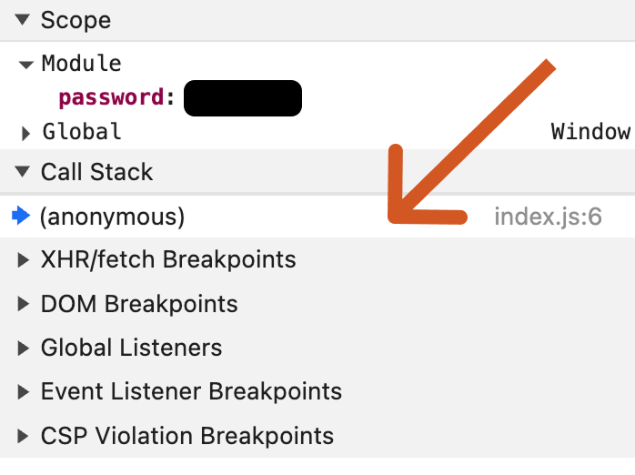

Abre DevTools para encontrar la contraseña secreta.
Mac: Cmd-Option-i
Windows/Linux: Ctrl-Shift-i
Luego, actualiza la página.
Si el depurador se detiene sin mostrarte el código correcto, haz clic en
la primera entrada de la pila de llamadas para saltar a donde realmente
está en pausa. Por lo general, esto solo ocurre la primera vez que hacemos
una pausa en una página determinada.
